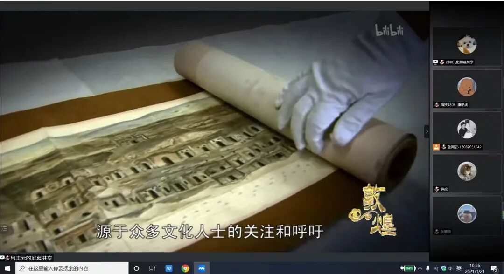

【煌然成篇·十三】敦煌——千年守望
敦煌——千年守望
一座城市，一种性格。艺术，是敦煌这座千古名城的永恒属性，它将带领着敦煌走向辉煌的未来。

千年岁月，敦煌外的天空依旧尘沙飞舞，只不过敦煌的陪伴者却不断变化。我想，这或许是创作者通过画面向我们倾诉：这是一种生命的延续，敦煌的历史，更是那些守望人的历史。正有了他们的陪伴与坚守，敦煌才能傲立在塞外的漫天黄沙中。



来源 | 行者无疆实践团
文字 | 孙健
排版 | 张清雅
审核 | 康艳虎 张清雅
行者无疆实践团
QQ：2758025831

随行者一起认识世界
长按二维码